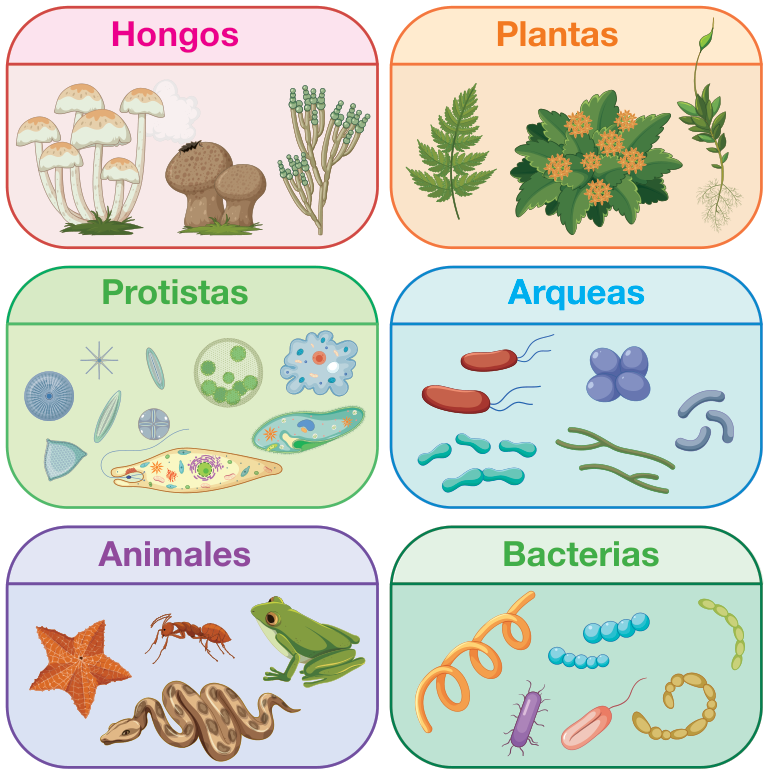
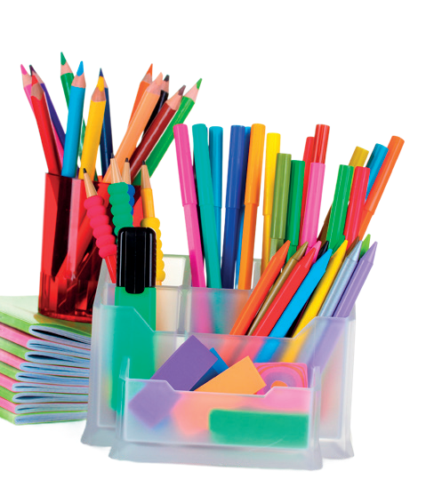
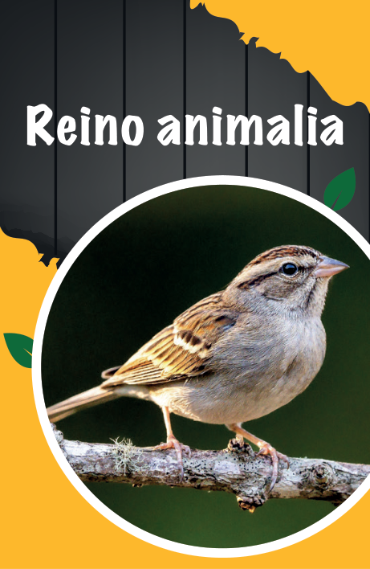
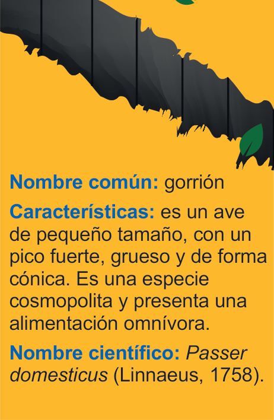

Vida
submarina y vida de ecosistemas terrestres
Diseñar y elaborar tarjetas didácticas e interactivas utilizando la información clave sobre la
clasificación taxonómica de los reinos, con el objetivo de fortalecer la memorización y la comprensión de
las características esenciales de cada uno. Esta actividad promueve la recuperación activa del
conocimiento de forma lúdica y contribuye al desarrollo de la competencia
científico-técnica.
Los seis reinos de la vida

Las tarjetas didácticas son herramientas educativas versátiles, diseñadas
para facilitar la adquisición y memorización de conocimientos de forma activa y lúdica. Consisten en piezas
de cartón o papel (físicas o digitales) que presentan información específica, generalmente con un concepto o
pregunta en un lado, y la respuesta o definición en el reverso. Se utilizan en diversos contextos educativos
y niveles de aprendizaje.
- 6 cartulinas A2
- Caja de marcadores de colores
- Imágenes de animales representativos de cada reino
- Lápiz y borrador

- Formen grupos de estudiantes y reúnan los materiales solicitados.
-
Ingresen al siguiente enlace https://cal.lat/p/ezYjXM o escaneen el
código QR y observen el video sobre la clasificación taxonómica.
-


Cada estudiante debe crear 6 tarjetas en una cartulina A2, una por cada reino.
- Consulten sobre una especie representativa de cada reino.
- En el anverso, coloquen una fotografía o dibujo de un organismo representativo; y en el reverso,
escriban el nombre común, las características clave que lo vinculan a su reino y el nombre
científico utilizando la nomenclatura binomial.
- Reúnan y mezclen todas las tarjetas. Repartan un conjunto de seis tarjetas por
jugador.
- Formen una mesa redonda para empezar el juego.
- El estudiante en turno dice: “¿me das un Protista?”
- Si el compañero tiene esa carta, se la entrega y el donante comparte oralmente la especie (nombre común
y nombre científico) y las características que justifican su pertenencia al reino.
-
El estudiante que consigue reunir las seis cartas de un reino gana esa ronda.
- Finalmente, elaboren una presentación oral que incluya:
- La clasificación de los seis reinos
- Ejemplos de especies con nomenclatura correcta
- Reflexión sobre cómo la jerarquía taxonómica refleja ancestros comunes
Evalúa tu trabajo según los criterios y completa la tabla.